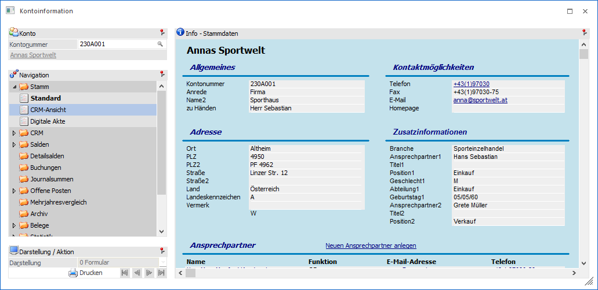
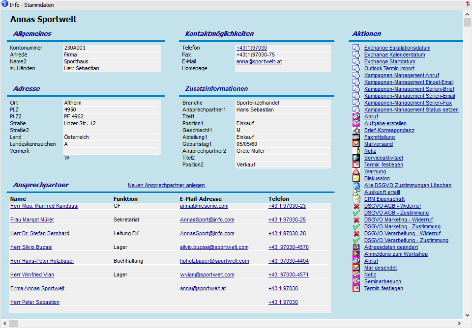

Kontoinformation - Bereich "Stamm" - Ansicht "CRM-Ansicht"
In der Ansicht "CRM-Ansicht" werden die Daten des Kontos, ähnlich der Ansicht "Standard", dargestellt. Der große Unterschied hierbei ist, dass an dieser Stelle auch CRM-Aktionen zur Fallanlage und angelegte CRM-Fälle des Typs "CRM Aktion" dargestellt werden.
Hinweis
Im Programm Einstellungen - Konten kann definiert werden, in welcher Reihenfolge die Zusatzfelder angezeigt werden sollen.
Hinweis2
Der Bereich der CRM-Einträge wird nur für jene Benutzer angezeigt, die die Option "CRM-Benutzer" gesetzt haben, bzw. WEB-CRM-Benutzer sind.

Die Ansicht besteht aus dem folgenden Info-Element:
ü Info - Stammdaten
ü Darstellung / Aktion
Info - Stammdaten

An dieser Stelle werden die Stammdaten und CRM-Aktionen des Kontos angezeigt. Des Weiteren können über den rechten Bereich der Anzeige neue CRM-Aktionen erfasst werden.
Darstellung / Aktion

Ø Submand.
Die Option "Submand." (alle Submandanten) ist im Bereich "Stamm" nur dann vorhanden, wenn die Konzern-Konsolidierung im Einsatz ist. Damit kann gesteuert werden, ob die Informationen aus den Sub-Mandanten in den einzelnen Bereichen mit angezeigt werden sollen. Diese Einstellung wird benutzerspezifisch gespeichert.
Ø  Drucken
Drucken
Durch Anwahl dieses Buttons wird die aktuelle Ansicht ausgedruckt.
Ø  VCR-Buttons
VCR-Buttons
Sollte die Anzeige der Stammdaten-Info über mehrere Seiten erfolgen, so kann mit Hilfe der VCR-Buttons zwischen den einzelnen Seiten gewechselt werden.